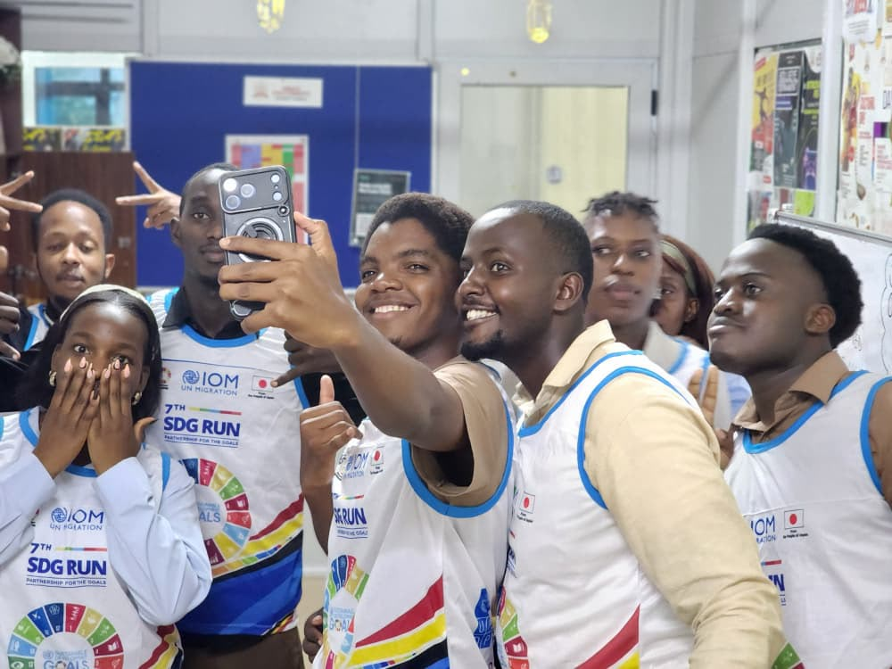

Featured Speakers

Dr. Amanya Jordan
Commissioner for Crop Production, MAAIF
Dr. Mugenyi has over 20 years of experience in agricultural policy and extension services in Uganda. He leads national programmes that help farmers improve coffee yields and quality.

Dr. guild speaker
Executive Director, Uganda Coffee Development Authority
Dr. Nalubega oversees coffee regulation, promotion and export development in Uganda. She has helped open new markets for Ugandan coffee in Europe and Asia.
Prof. GRECE KEMBABAZI
Professor of Agronomy, Makerere University
Prof. Byaruhanga researches disease-resistant coffee varieties and sustainable farming practices. His work has been adopted by thousands of smallholder farmers across Uganda.

Ms. KHLOE FELICIA
Climate Adaptation Specialist, Africa Climate Agriculture Network
Ms. Kyomugisha advises governments and farmer groups on climate-smart agriculture. She specialises in helping coffee growers cope with changing rainfall and rising temperatures.
More Speakers
| Name | Organisation | Country | Session Title |
|---|---|---|---|
| Mr. Peter Ssemwogerere | Uganda Specialty Coffee Association | Uganda | Quality, Grading and Cupping Standards |
| Ms. Amina Hassan | East Africa Agribusiness Finance Group | Tanzania | Access to Finance for Coffee Value Chain Actors |
| Mr. Daniel Kiprono | Kenya Coffee Exporters Forum | Kenya | Opportunities in Regional and Global Markets |
| Ms. Sarah Atim | Pearl Roasters Limited | Uganda | Value Addition: From Green Bean to Finished Product |
Call for Papers
We invite researchers, students and industry experts to submit abstracts on topics such as coffee production, quality, climate resilience, markets and value addition. Abstracts should be no more than 300 words and must clearly state the problem, method and main findings.
Accepted authors will present their work during the Research Papers Session on 18 September 2026. All submissions should be emailed in Word or PDF format to papers@coffeeexpo.example, with the author's name, organisation and contact details.
Key Dates
| Milestone | Date | Status |
|---|---|---|
| Abstract submission deadline | 30 May 2026 | Closed |
| Notification of acceptance | 30 June 2026 | Closed |
| Final paper submission | 31 July 2026 | Open |